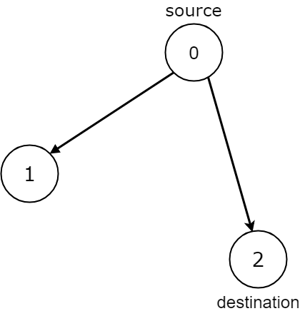
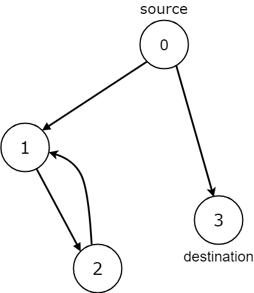
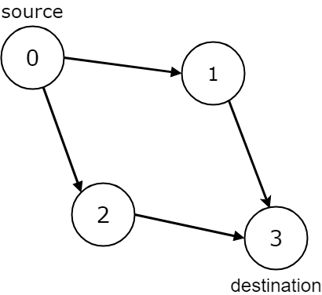

| Category | Difficulty | Likes | Dislikes |
|---|---|---|---|
| Algorithms | Medium | 757 | 430 |
google
Given the edges of a directed graph where edges[i] = [ai, bi] indicates there is an edge between nodes ai and bi, and two nodes source and destination of this graph, determine whether or not all paths starting from source eventually, end at destination, that is:
source node to the destination nodesource node to a node with no outgoing edges, then that node is equal to destination.source to destination is a finite number.Return true if and only if all roads from source lead to destination.
Example 1:

Input: n = 3, edges = [[0,1],[0,2]], source = 0, destination = 2
Output: false
Explanation: It is possible to reach and get stuck on both node 1 and node 2.Example 2:

Input: n = 4, edges = [[0,1],[0,3],[1,2],[2,1]], source = 0, destination = 3
Output: false
Explanation: We have two possibilities: to end at node 3, or to loop over node 1 and node 2 indefinitely.Example 3:

Input: n = 4, edges = [[0,1],[0,2],[1,3],[2,3]], source = 0, destination = 3
Output: true
Constraints:
1 <= n <= 1040 <= edges.length <= 104edges.length == 20 <= ai, bi <= n - 10 <= source <= n - 10 <= destination <= n - 1